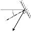

LaserCanvas 5 > Optics >
Mirrors are optics that reflect the beam at arbitrary angles, and can, in general, be dragged anywhere on the Canvas. In addition, mirrors can act as partially-reflective output coupler to give out-coupled systems.
Between the prisms of a prism pair, only flat mirrors can be inserted. Flat Mirrors have the same properties as standard mirrors, except the radius of curvature, which is flat.
To insert a mirror or flat mirror, select menu Edit | Insert | Mirror or clicking the
Specifies the radius of curvature of the mirror, in units of mm (
If the Astigmatic option is checked, separate values can be entered for the mirror's radius of curvature in the sagittal and tangential planes.
This property is not available for Flat Mirror optics.
Limits: –90 < Face Angle (deg) < 90.

Specifies the angle of incidence that the ray makes to the mirror normal, in units of degrees. A positive angle means that the normal to the mirror surface is rotated anti-clockwise from the input ray. The Face Angle is, by definition, a rotation in the tangential plane.
Checking the Astigmatic box allows separate sagittal and tangential values to be entered for the Mirror optic’s Radius Curvature property.
This property is not available for Flat Mirror optics.
When the Locked Angle box is checked, dragged optics in the Canvas are moved so as to maintain the specified Face Angle. If the check box is clear, Mirror or Flat Mirror optics are free to rotate when optics are dragged.
Under some circumstances, dragging optics with the Locked Angle box checked can lead to unpredictable optic placements.